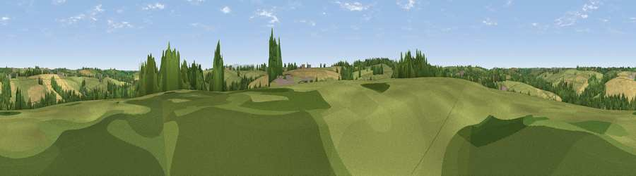

Viewpoint near Holsworthy Beacon
#38015 in England · top 90% of its area beats it · near Holsworthy BeaconWhere it is
The exact computed spot (SS 36925 09725). Click the marker for map links.
The view, rendered

A 360° render of this exact spot computed from the terrain model, tree cover and land cover — summer colours, afternoon light, calibrated against photographs of famous viewpoints. Real trees, hedges and buildings will differ in detail.
The panorama
Grey silhouette: terrain skyline in each direction (720 bearings, Earth curvature and refraction included). Dashed green: skyline with trees (+15 m) and buildings (+8 m) as obstacles. Blue strip: how far the ground is visible on each bearing.
Where the view opens
Wedge length = distance to the farthest visible ground on that bearing (vegetation-aware). Rings at 10, 25 and 50 km.
What fills the view
61% grassland · 25% cropland · 12% woodland · 1% built-up
Angular shares of the visible panorama (visual magnitude), not map area. Landscape diversity 0.42 (0–1 Shannon).
Key numbers
More beautiful places nearby
The staircase of upgrades: each row has a higher view potential than everything closer. Driving times are estimates from straight-line distance, calibrated against real road routing — check an actual route before setting out.
| Place | Direction | Drive | Score |
|---|---|---|---|
| Viewpoint near Thornbury | ENE · 3 km | ~7 min | 36.0 |
| Viewpoint near Newton St Petrock | ENE · 4 km | ~8 min | 49.7 |
| Viewpoint near Hollacombe | SSE · 6 km | ~13 min | 60.3 |
| Viewpoint near Parkham | N · 10 km | ~20 min | 61.8 |
| Viewpoint near Buckland Brewer | NNE · 12 km | ~23 min | 66.6 |
| Viewpoint near Bucks Mills | N · 14 km | ~25 min | 79.6 |
| Viewpoint near Bucks Mills | N · 14 km | ~25 min | 84.0 |
| Viewpoint near Crackington Haven | SW · 28 km | ~45 min | 88.1 |
50.86397, -4.31867 · source: screening · position refined by local search. Computed location — check access rights before visiting.